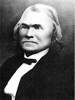

|

|

|
|
|
Cherokee political leader and Confederate Brigadier General,
Stand Watie, was born on December 12, 1806 in the Cherokee
town of Oothcaloga, near Rome, Georgia. His father was
David Oowatie and his mother was Susannah Reese.
As a child, Watie attended the Morovian Mission School in
Springplace, Georgia. He became a planter as well as a
clerk in the Cherokee Supreme Court. In 1835, along with
approximately one hundred other Cherokees, he signed the
controversial Treaty of New Echota. In the Treaty, which
Principal Chief John Ross and the majority of the Cherokee
Nation opposed, the Cherokees agreed to cede their land to
the United States and move to the territory now known as
Oklahoma. Watie migrated in 1837, while most of the nation
unsuccessfully tried to resist removal.
The tensions between Ross and Watie reemerged when the
Civil War began. Ross led the Cherokee Nation to a stance
of neutrality, but Watie immediately threw his support
behind the Confederacy. Watie received a commission as a
colonel, formed the Confederate Cherokee Regiment of Mounted
Rifles, and arranged a Cherokee-Confederacy alliance. Ross
reluctantly supported the alliance before fleeing the nation
in 1862. With Ross gone, the Cherokees elected Watie
principal chief. Watie participated in various calvary
engagements in Indian Territory, including battles at
Wilson's Creek, Chustenahlah, Pea Ridge, Cowskin Prarie,
Webbers Falls, and the First and Second Battles of Cabin
Creek. In May 1864, the Confederacy rewarded Watie with a
promotion to brigadier general, making him the only Native
American to achieve this rank. Watie's military career
ended when he surrendered on June 23, 1865,
When the War ended, Watie helped negotiate the Cherokee
Reconstruction Treaty of 1866 and served as a delegate to
the General Council for Indian Territory in 1870-1871. Soon
after, Watie returned to his Honey Creek farm, where he died
on September 9, 1871.
Source: Joan Waugh, ed., Facts on File Encyclopedia of American
History: Civil War and Reconstruction, 1856 to 1869 (New York: Facts on
File, 2003), 390-391.
|